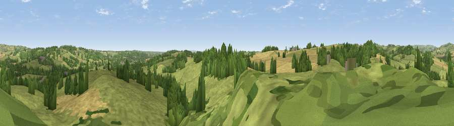

Viewpoint near Windley
#28480 in England · top 42% of its area beats it · near WindleyWhere it is
The exact computed spot (SK 31025 44125). Click the marker for map links.
The view, rendered

A 360° render of this exact spot computed from the terrain model, tree cover and land cover — summer colours, afternoon light, calibrated against photographs of famous viewpoints. Real trees, hedges and buildings will differ in detail.
The panorama
Grey silhouette: terrain skyline in each direction (720 bearings, Earth curvature and refraction included). Dashed green: skyline with trees (+15 m) and buildings (+8 m) as obstacles. Blue strip: how far the ground is visible on each bearing.
Where the view opens
Wedge length = distance to the farthest visible ground on that bearing (vegetation-aware). Rings at 10, 25 and 50 km.
What fills the view
62% grassland · 19% woodland · 17% cropland ·
Angular shares of the visible panorama (visual magnitude), not map area. Landscape diversity 0.42 (0–1 Shannon).
Key numbers
More beautiful places nearby
The staircase of upgrades: each row has a higher view potential than everything closer. Driving times are estimates from straight-line distance, calibrated against real road routing — check an actual route before setting out.
| Place | Direction | Drive | Score |
|---|---|---|---|
| Viewpoint near Windley | WNW · 1 km | ~3 min | 45.3 |
| Viewpoint near Windley | W · 1 km | ~3 min | 58.6 |
| Viewpoint near Hazelwood | NE · 3 km | ~8 min | 63.1 |
| Firestone Hill | NE · 3 km | ~8 min | 64.6 |
| Alport Height | N · 7 km | ~15 min | 73.9 |
| Tissington Hill | WNW · 18 km | ~31 min | 75.5 |
| Viewpoint near Stanton under Bardon | SSE · 34 km | ~53 min | 76.0 |
| Viewpoint near Woodhouse Eaves | SE · 35 km | ~54 min | 77.7 |
52.99356, -1.53923 · source: screening · position refined by local search. Computed location — check access rights before visiting.